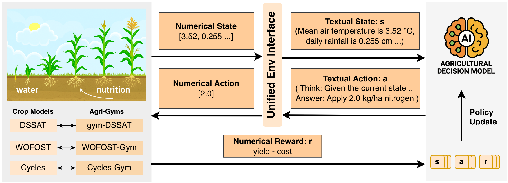

Schema-aware agricultural RL
Observations, actions, and objectives are explicit in the prompt, making the policy-facing schema a benchmark variable.
Framework and benchmark
A multi-simulator LLM-RL framework for agricultural management.
AgriManager studies whether prompt-conditioned policies can generalize across changing weather, crops, prices, observations, actions, objectives, and simulator dynamics.
What is AgriManager?
Agricultural management varies along two axes: distributional shift within a fixed task interface, such as changing weather, crops, and prices, and structural shift across interfaces, such as changing observations, available actions, and management objectives. AgriManager is a multi-simulator LLM-RL framework and benchmark for studying both axes. It unifies DSSAT, WOFOST, and Cycles through prompt-based schema specification and supports joint multi-objective, multi-environment training.
The benchmark defines a three-tier generalization ladder: within-schema distributional shift, single-axis schema shift, and compositional schema shift across simulators. Across these settings, AgriManager provides an empirical testbed for evaluating when prompt-conditioned policies can generalize across heterogeneous agricultural deployments.
Highlights
Observations, actions, and objectives are explicit in the prompt, making the policy-facing schema a benchmark variable.
The framework connects WOFOST-Gym, CycleGym, and DSSAT-Gym through documented environment adapters.
Prompt-conditioned LLM policies train with GRPO through VeRL; fixed-interface NN-PPO baselines are included when valid.
Public Hugging Face datasets provide fixed train/validation rows, metadata, and runtime weather-cache artifacts.
Framework

A schema consists of the observation fields, available actions, and management objective exposed to the policy.
Prompt-conditioned policies can re-read the schema from text instead of relying on a fixed observation vector and action head.
The prompt is rebuilt at every decision step around the current schema, observation, action history, and objective.
Tutorial
git clone https://github.com/agrimanager875-ux/agrimanager-code.git AgriManager
cd AgriManager
conda create -n agrimanager python=3.12 -y
conda activate agrimanager
bash install.shThe standard installer sets up AgriManager, VeRL, WOFOST-Gym, and CycleGym. DSSAT-Gym is optional and uses a separate setup path because its native runtime can take substantially longer to install.
Tutorial
bash smoke_tests/wofost_gym/run_build_datasets.sh
bash entrypoints/eval/eval.shUse the lightweight WOFOST smoke path for sanity checks. Full training and evaluation commands are mapped in experiments/README.md.
Tutorial
AgriManager uses YAML/Hydra-style configuration. Dataset rows carry the full environment
configuration, including env_name, objective, action menu, prompt settings,
and simulator-specific runtime fields. This keeps dataset generation, training, and
evaluation decoupled: the same parquet split reconstructs the same environment.
Most users can run the standard installer without custom environment variables. Optional overrides are available for existing WOFOST-Gym, CycleGym, DSSAT-Gym, and hosted model-provider paths or credentials.
Guides
Every few simulated days, the agent decides whether to fertilize or irrigate. The simulator advances soil and crop state until the next decision. The default objective is profit over a single growing season.
At the start of each simulated year, the agent chooses the crop and planting week. The simulator runs the annual cycle, including off-season soil dynamics, and the objective is gross revenue over a multi-year rotation.
Guides
AgriManager trains prompt-conditioned LLM policies with GRPO through VeRL. Each rollout is multi-turn: the policy reads the schema and current observation, emits a structured action, receives the next observation and reward, and the prompt is rebuilt for the next decision step.
The benchmark evaluates think and no-think response contracts. The think variant emits a short reasoning trace before the final action; the no-think variant emits only the action. Fixed-interface NN-PPO baselines use native numeric observations and are only applicable when observation and action schemas remain compatible.
Guides
| Tier | Setting | Varies | Test | Artifact |
|---|---|---|---|---|
| T1.1 | Weather-regime shift | Weather context | ID, drought, wet, hot, cold | WOFOST dataset |
| T1.2 | Cross-crop trait shift | Crop context and traits | Held-out crops | WOFOST dataset |
| T1.3 | Price-regime shift | Crop prices | ID, high-corn, high-soybean | CycleGym generator |
| T2.1 | Observation-schema shift | Observation schema | Missing, renamed, extended, anonymized schemas | WOFOST dataset |
| T2.2 | Action-menu shift | Action schema | Held-out N/P/K/water menus | WOFOST dataset |
| T2.3 | Reward-formulation shift | Reward schema | Yield, profit, water, nutrient stewardship | WOFOST dataset |
| T3.1 | Cross-simulator transfer | Simulator schema and dynamics | 3 x 3 source-target pairs | All adapters |
| T3.2 | Unified policy | Simulator, action, reward tuple | Held-out schema combinations | Datasets + adapters |
Within fixed schemas, prompt-conditioned LLM-RL with explicit reasoning matches or exceeds fixed-interface NN-RL across weather, crop-trait, and price shifts.
Single-axis schema shift exposes distinct burdens: information sufficiency, joint action coverage, and objective coverage.
A unified prompt-conditioned policy can recombine held-out simulator, action, and objective tuples when training provides marginal coverage.
Reference
The hosted tabular artifacts are WOFOST-based. CycleGym and DSSAT-Gym experiments are reproduced through executable simulator adapters and scenario-generation scripts rather than separate hosted static datasets.
All public Hugging Face dataset artifacts in one collection.
WOFOST Weather Pool20-crop weather scenario pool for cross-crop trait shift and WOFOST crop-support runs.
WOFOST Weather-Regime PoolChickpea and potato scenarios across ID, drought, wet, hot, and cold weather regimes.
WOFOST Maize Weather PoolMaize-only pool for observation, action, reward, and cross-simulator experiments.
Guides
A new simulator integrates by adding an environment package under
agrimanager/env/<name>/ that implements the dataset generator, LLM
environment, configuration object, prompt/action parser, and optional NN adapter.
env.py
env_config.py
prompt.py
create_dataset.py
nn_adapter.py # optionalSee the full environment adapter contract.
Reference
If you use AgriManager, please cite the project. This BibTeX will be updated after paper release.
@misc{agrimanager2026,
title = {AgriManager},
author = {Anonymous Authors},
year = {2026},
note = {Citation information will be updated after paper release.}
}Limitations
AgriManager is evaluated in simulation. DSSAT, WOFOST, and Cycles are mechanistic crop simulators and do not capture every real-world deployment factor, such as sensor noise, actuator latency, farmer-in-the-loop delays, or local agronomic constraints. The benchmark is intended for research evaluation, not direct farm-management recommendation.